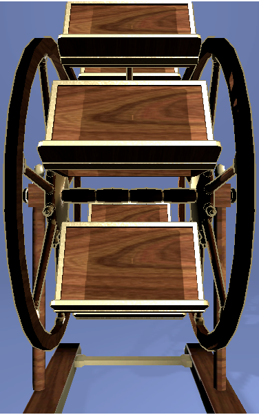

<div style='width:100%;background-color:#6778aa;overflow:hidden;display:blocK;'>
	
	
	
	
	
	
	
	
	
	
	
	<div id='fas2' class='droppable' rel='libro2' style='height:1.8%;width:29.5%;margin-top:4.2%;left:35.5%;display:block;position:absolute;z-index:22000;'></div>	
<div id='fas1' class='droppable' rel='libro1' style='height:13.4%;width:38%;margin-top:43.5%;left:31%;display:block;position:absolute;z-index:22000;'></div>	
<div id='fas7' class='droppable' rel='libro7' style='height:13%;width:32.5%;margin-top:76.7%;left:34%;display:block;position:absolute;z-index:22000;'></div>	
<div id='fas6' class='droppable' rel='libro6' style='height:13%;width:31%;margin-top:76%;left:34.8%;display:block;position:absolute;z-index:22000;display:none;'></div>	
<div id='fas5' class='droppable' rel='libro5' style='height:13%;width:31%;margin-top:76%;left:34.8%;display:block;position:absolute;z-index:22000;display:none;'></div>	
<div id='fas4' class='droppable' rel='libro4' style='height:13%;width:31%;margin-top:76%;left:34.8%;display:block;position:absolute;z-index:22000;display:none;'></div>	
<div id='fas3' class='droppable' rel='libro3' style='height:13%;width:31%;margin-top:76%;left:34.8%;display:block;position:absolute;z-index:22000;display:none;'></div>	
</div>
<br/>
<div id='cont_piezas' style="width:100%;float:left;display:block;";>
		
		
			<div class='draggable  libro1 nlibro1 dragacti3' style='display:block;margin-right:17%;width:20%;'>&nbsp;</div>
			<div class='draggable  libro1 nlibro1 dragacti3' style='display:block;width:28%;'>
				
			</div>
			<div class='draggable libro7 nlibro2 dragacti3' style='width:28%;display:none;'>
				
			</div>
			<div class='draggable  libro6 nlibro3 dragacti3' style='width:28%;display:none;'>
				
			</div>	
			<div class='draggable  libro5 nlibro4 dragacti3' style='width:28%;display:none;'>
				
			</div>
			<div class='draggable  libro4 nlibro5 dragacti3' style='width:28%;display:none;'>
				
			</div>
			<div class='draggable libro3 nlibro6 dragacti3'  style='width:28%;display:none;'>
				
			</div>
			<div class='draggable  libro2 nlibro7 dragacti3' style='width:28%;display:none;'>
				
			</div>	
		
		
	</div>

<br/>
<script type='text/javascript'>
	var contador=0;
	var f7=7;
	var f6=1;
	var f5=1;
	var f4=1;
	var f3=1;
	var f1=18;
	var f2=29;
	altos=['',"2%","4.5%","8%","11%","12.5%","13%",'13%',"13.6%",'13.9%',"13.9%",'14.2%',"14.4%",'14.4%',"14.4%",'13.8%',"13.8%",'13.4%','12%','11.7%','11.3%','10.6%','10.1%','9.2%','8.5%','8.5%','7.9%','6.9%','6.7%',"6.4%","6%","5.5%","5%","5%","4.6%","4.6%","4.6%","1.8%"];
	anchos=['',"30%","30%","31%","31%","31%","31%",'32.5%',"32.5%",'32.5%',"32.5%",'34%','36%',"36%",'37%',"37%",'38%',"38%",'43%','41.5%','41.5%','41.5%','41.5%','41%','40%','39.6%','39%','37.8%','37%',"37%","37%","35%","35%","34%","32%","32%","30.5%","29.5%"];
	tops=['',"91.6%","88.5%","84%","79%","76.7%","76%",'76.7%',"75.5%",'73.9%',"72%",'69%',"65.8%",'61.7%',"57%",'52%',"46%",'43.5%','44%','40%','35.5%','31%','26%','21.6%','17.2%','12.9%','8.8%','6.8%','5.5%',"5.5%","4.1%","3.1%","2.4%","2%","1.8%","2%","3%","4.2%"];
	lefts=['',"35%","35%","34.8%","34.8%","34.8%","34.8%",'34%',"34%",'34%',"34%",'33%','32%',"32%",'31.5%',"31.5%",'31%',"31%",'29%','29.5%','29.5%','29.5%','29.5%','29.8%','30.3%','30.1%','30.8%','31.2%','31.5%',"31.5%","31.5%","32.5%","32.5%","33%","34%","34%","35%","35.5%"];
	var correctas=0;
	var img=1;
	var texto_es="Un facistol o atril circular es un instrumento que facilita el estudio. ¿Te imaginas qué textos podrías colocar? Era una herramienta común en los conventos e iglesias barroco novohispanas. Se gira para poner al alcance los textos que se necesitan.";
	var texto_en="A lectern or circular lectern is a tool which facilitates study. Can you imagine what texts you could place on it? It turns to make the pages you need accessible.";
	$( ".draggable" ).draggable({
		revert:true,
		}
	);
	$(".droppable").each(function(){
		$(this).droppable({
			accept:"."+$(this).attr("rel"),
			drop:function(event,ui){
				z=$(this).attr("rel");
				$(this).html(ui.draggable.html());
				correctas++;
				muevefacistol();
				if(correctas==7)
				{
					if(lan=="es")
					{
						texto=texto_es;
					}
					else
					{
						texto=texto_en;
					}
					$("#mensaje").html("<br><p style='width:80%;margin-top:200px;left:10%;position:relative;z-index:20003;text-align:center;'>"+texto+"</p>");
					$(".mensaje").show();
				}
				
				ui.draggable.detach();
				$("."+z+"_x").detach();
				$(".nlibro"+(correctas+1)).show();
				$(this).droppable( "option", "disabled", true );
				return false;
				
				},
      
    });
    });
    function muevefacistol()
    {
		$("#f"+img).css("display","none");
		img++;
		f1++;
		f2++;
		f3++;
		f4++;
		f5++;
		f6++;
		f7++;
		contador++;
		if(f1==38)
		{
			
			$("#fas1").css("display","none");
		}
		if(f2==38)
		{
			
			$("#fas2").css("display","none");
		}
		if(f3==38)
		{
			
			$("#fas3").css("display","none");
		}
		if(f4==38)
		{
			
			$("#fas4").css("display","none");
		}
		if(f5==38)
		{
			
			$("#fas5").css("display","none");
		}
		if(f6==38)
		{
			
			$("#fas6").css("display","none");
		}
		if(f7==38)
		{
			
			$("#fas7").css("display","none");
		}
		if(contador==5)
		{
			f6=1;
			$("#fas6").css("display","");
		}
		if(contador==16)
		{
			f5=1;
			$("#fas5").css("display","");
		}
		if(contador==27)
		{
			f4=1;
			$("#fas4").css("display","");
		}
		if(contador==38)
		{
			f3=1;
			$("#fas3").css("display","");
		}
		if(f1==78)
		{
			f1=1;
			$("#fas1").css("display","");
		}
		if(f2==78)
		{
			f2=1;
			$("#fas2").css("display","");
		}
		if(f3==78)
		{
			f3=1;
			$("#fas3").css("display","");
		}
		if(f4==78)
		{
			f4=1;
			$("#fas4").css("display","");
		}
		if(f5==78)
		{
			f5=1;
			$("#fas5").css("display","");
		}
		if(f6==78)
		{
			f6=1;
			$("#fas6").css("display","");
		}
		if(f7==78)
		{
			f7=1;
			$("#fas7").css("display","");
		}
		if(img==12)
		{
			img=1;
			$("#f"+img).css("display","");
			
		}
		else
		{
			$("#fas1").css("margin-top",tops[f1]);
			$("#fas1").css("left",lefts[f1]);
			$("#fas1").css("width",anchos[f1]);
			$("#fas1").css("height",altos[f1]);
			$("#fas2").css("margin-top",tops[f2]);
			$("#fas2").css("left",lefts[f2]);
			$("#fas2").css("width",anchos[f2]);
			$("#fas2").css("height",altos[f2]);
			$("#fas3").css("margin-top",tops[f3]);
			$("#fas3").css("left",lefts[f3]);
			$("#fas3").css("width",anchos[f3]);
			$("#fas3").css("height",altos[f3]);
			$("#fas4").css("margin-top",tops[f4]);
			$("#fas4").css("left",lefts[f4]);
			$("#fas4").css("width",anchos[f4]);
			$("#fas4").css("height",altos[f4]);
			$("#fas5").css("margin-top",tops[f5]);
			$("#fas5").css("left",lefts[f5]);
			$("#fas5").css("width",anchos[f5]);
			$("#fas5").css("height",altos[f5]);
			$("#fas6").css("margin-top",tops[f6]);
			$("#fas6").css("left",lefts[f6]);
			$("#fas6").css("width",anchos[f6]);
			$("#fas6").css("height",altos[f6]);
			$("#fas7").css("margin-top",tops[f7]);
			$("#fas7").css("left",lefts[f7]);
			$("#fas7").css("width",anchos[f7]);
			$("#fas7").css("height",altos[f7]);
			$("#f"+img).css("display","");
				setTimeout(function(){muevefacistol()},50);
		}
		
	}

</script>
